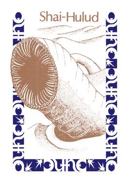
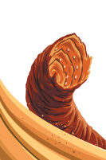

Sizes below are the ones the client actually uses. The map token is 26px across before map zoom. Log and status lines draw it at 18 to 30px.
What we have now
monster.svg, as the map draws it
120px
26px map
20px log
Hand-drawn in Affinity Designer by Ronald Ossendrijver, the upstream author. Added December 2021. Two separate worm segments with a tan-to-brown gradient and a red mouth. At 26px it reads as two commas.
Same icon on an ink panel
The dark outline disappears against the reskin's ink surfaces, so only the tan body is left.
worm.gif (login screen and status bar)
A third, unrelated worm already in the repo. Green, animated, drawn in yet another style.
Shai-Hulud.gif (spice card)

Scan of the 1979 Avalon Hill spice card. Stippled sepia worm head. Already shipped in the repo.
Gale Force Nine, 2019 edition (art by Ilya Baranovsky)
The client's map, faction discs, and spice-blow spiral are already this edition's art, so these are the harmonious sources. Four different worm treatments appear in the rulebook.
Shai-Hulud card illustration
Black silhouette arch, segmented, mouth open, over a horizon line. Two flat colours. This is the one that would survive at 26px.
Card-corner disc glyph
A brown curled worm on an orange disc, in the same disc format as the faction sigils and the spice-blow disc. Sits in the header of every Shai-Hulud card. Smallest and most icon-like of the four.
Sandworm token
The physical Fremen token. A round disc with the painted worm head rising from sand. Painterly, would go muddy at 26px.
Rulebook margin painting
Full-colour worm rising from dunes. Same image as the box cover. Illustration, not an icon.
High quality versions
The margin painting is stored as vector art inside the GF9 rulebook PDF, so it can be extracted losslessly. The token is not. It is a 102px JPEG-2000 in the PDF and nothing larger turned up online. But the token is the same painting cropped into a disc, so a sharp token can be rebuilt from the vector.
Worm painting, vector (gf9-worm-vector.svg)

Cropped from page 4 of the rulebook with the page background and footer band removed. Transparent background. Scales to any size. 770KB because the PDF stores every brushstroke as its own path.
Token, rebuilt from the vector (gf9-token-hires.svg)
My reconstruction, not GF9's file. Dark disc with a few stars behind the vector worm, framed to match the printed token. The composition can be nudged by editing the image offset in the SVG.
Token as stored in the PDF
102 by 101 pixels, and the PDF's colour channels come out swapped. This is the ceiling for the original token asset.
Before and after, in context
Same fixture, same viewport, only the file behind the skin's worm image swapped. Crops are at device scale 2, so everything is shown at twice its on-screen size.
Map marker: the worm in Red Chasm, drawn under the Fremen forces there
beforeafter
Shield-wall marker: one small worm per worm that has appeared, on the Shield Wall (advanced rule)
beforeafter
Inline in the prompt: "decide where to travel with"
beforeafter
Spice blow report: "appears in Red Chasm"
beforeafter
Spice blow report: "survive ... in Red Chasm"
beforeafter
Territory hover on rock (Pasty Mesa): protected from the worm, chip muted
beforeafter
Territory hover on sand (Hagga Basin): exposed to the worm
beforeafter
Reading
The current icon is the odd one out because it is a lone drawing in a style nothing else uses. Every other mark on the map is a flat glyph on a disc in the GF9 vocabulary. The two GF9 sources that fit that vocabulary are the disc glyph and the card silhouette. The disc glyph is the natural match for the map token since it already sits beside the faction discs on the ring. The silhouette is the better shape for a standalone 20px inline mark in the log.
Neither can be lifted straight from the PDF. Both are raster crops at roughly 100 to 200px and would need to be redrawn as an SVG path. Licensing is the same grey area the map and sigils already sit in.
 120px
120px